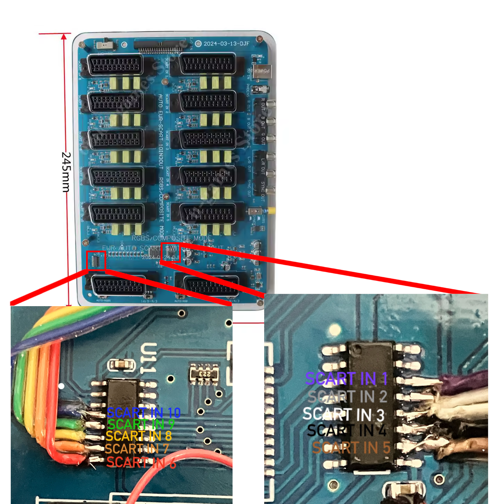
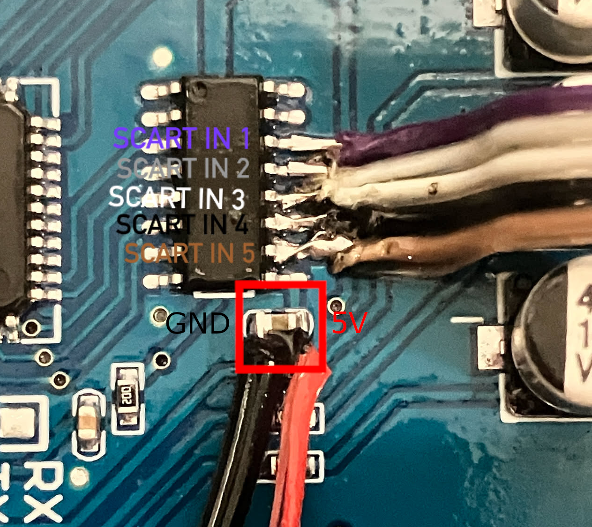
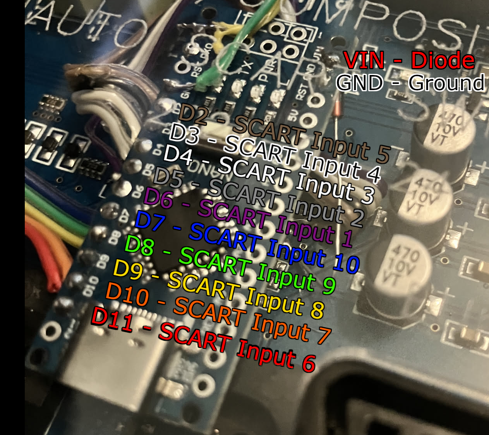
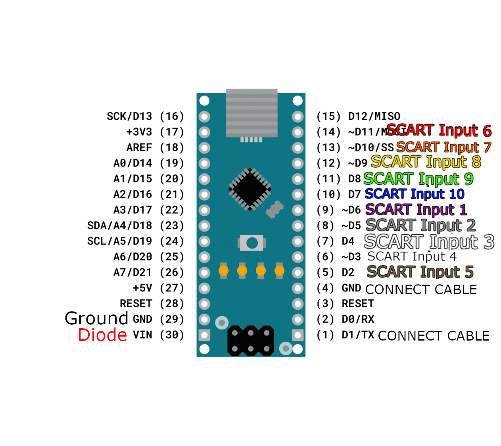
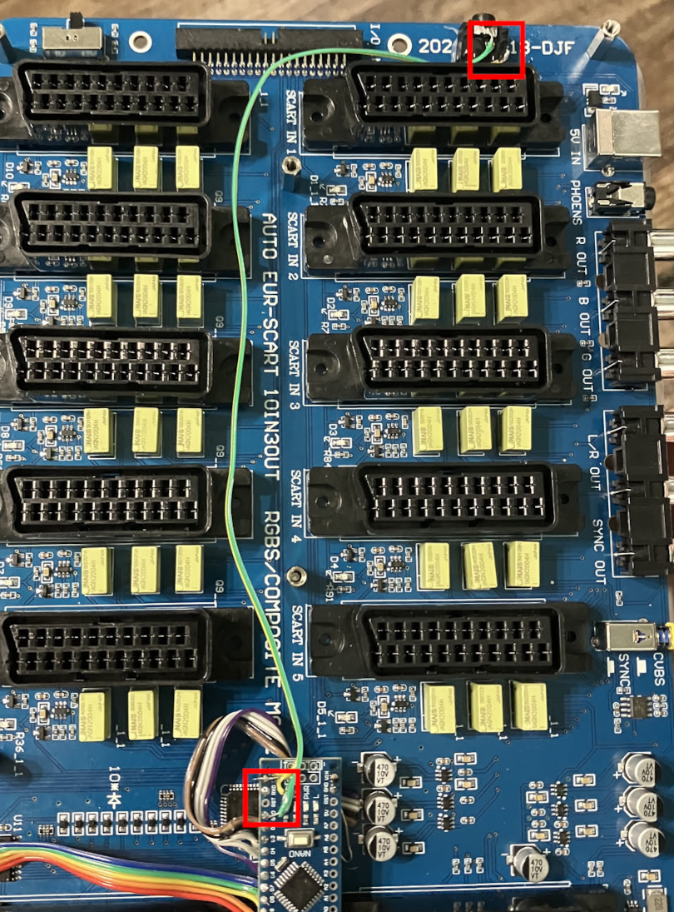
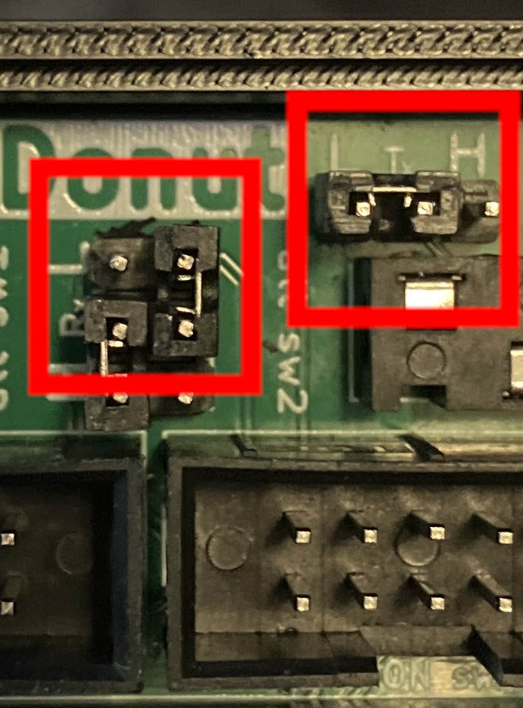
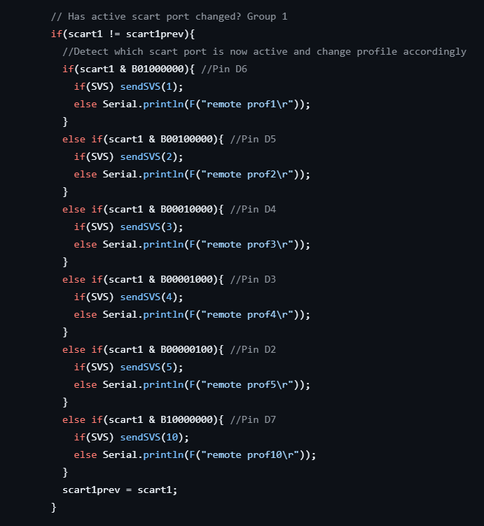

Modding the OtakuGames SCART Switch for Compatibility with the Donut Dongle (5/25/25)
Back in January, I talked about my experience with donutswdad's Donut Dongle.
Since then, the Donut Dongle has evovled quite a lot as a product, and it's been really exciting seeing it change.
When I made my post, I was only able to talk about the plug-and-play functionality with the TEsmart HDMI switch. Since then, I've started to add SCART cables into my setup, which presented the new problem of not having an automatic switching solution for the RetroTINK.
There are a lot of great products for this out there such as the SVS and the gSCART, but the one that seemed most cost effective and best for my setup (since I needed a dual output), was the OtakuGames 10x3 SCART Switch.
As mentioned, the OtakuGames provides three outputs as well as automatic switching, which was perfect for my setup. One output goes to the RetroTINK 4K, one output goes to my RGB-modded CRT.
Now we ask: given our already-existing infrastructure with the Donut Dongle, can we make it autoselect a profile? After a little while, the answer is yes, if we mod it!
Turns out, donutswdad has gone down this road before as well, so the modding process was decently smooth.
To attempt to make this all make sense, I'm going to explain how this mod works:
You have probably heard in your life at some point that computers talk in zeroes and ones, or binary.
This is done via voltage. For example, a particular computer having 5 volts in a certain data point gets interpreted as 1, or "digital high" (or just HIGH).
Conversely, a computer having 0 volts (or, at least close enough to it) in a data point gets interpreted as a 0, or "digital low" (or just LOW).
How does this help us?
It turns out the OtakuGames switch has two ICs, part number ULN2003C. These are Darlington arrays.
I can't really speak for the design of the switch, nor is it really in the scope of this post, but these Darlington arrays correspond to each input, with five inputs per IC.
Specifically, they output the current state of the switch. When an input is selected, the corresponding pin will go to LOW, whereas every other input will be HIGH.
This is good! We can tap into these points and "listen" to what they're outputting. If we observe that a specific input is LOW, we know that input is active. If it then goes HIGH and another goes LOW, we know the input changed. If it's all HIGH, there is no active input.
Good plan, so let's make it come to fruition: with an Arduino Nano, let's listen to all these pins and set them from D2 through D11. If a pin goes LOW, we send a signal for the Donut Dongle to switch to a specific profile.
What do we need for this mod?
1) OtakuGames SCART Switch. Note that different revisions of the SCART switch have been noted to have different Darlington Array pinouts. I am modding the 2024-03-13 board revision, purchased recently from eBay.
2) An Arduino Nano and USB-C cable
3) Ribbon Wire or any type of 28AWG wire. I used ribbon wire, but anything really works.
4) PJ-307 3.5mm Headphone Jack
5) A soldering iron, solder, and flux. I recommend 63/37 Kester solder and Stirri Flux.
6) Hot glue gun (and hot glue) 7) Optional, but personally recommended: BAT85 diode, or any diode that allows a minimum of around 5V/~300mA reverse bias.
Step 1: We need to first determine which input corresponds to which pin in the Darlington array. To do this, we can just listen in with a multimeter by setting the red probe on a leg and cycling through inputs. After probing, I found the following legs corresponded to the following inputs:

Step 2: This has already been pictured above, but the next step is to solder leads to the pins. Please pardon the messy soldering... dealing with stranded wire is always a bit tough for me.
Once again, please check your own pinout before soldering. It's a lot easier to check with a multimeter than removing ribbon wires.
Step 3: Solder to GND and 5V. We will need to power our Arduino Nano somehow, and that somehow is by tapping into the capacitor just below the Darlington Array for SCART inputs 1-5. Before soldering, please verify which is GND and which is 5V by using a multimeter.

While the picture has a red cable coming from the 5V point, I ended up replacing this cable for the BAT85 diode as to prevent backfeeding the switch when plugging in a USB-C cable from a PC to the Nano to program it. This might not be fully necessary, but I personally prefer to be a bit safer here. Be sure to orient the diode correctly, with the black ring side (cathode) closer to the Nano and the anode being soldered to the switch's capacitor. Additionally, ensure that the legs of the diode do not touch any other components.
Step 4: Wire it all up to the Arduino Nano. The hard part of soldering to the board is over. Good work!
This is the pinout I followed when soldering the leads from the Darlington Arrays to the Arduino Nano:

While you are at it, connect cables to the holes labelled TX1 and GND.
Step 5: With a multimeter, verify the pinout for your PJ-307 headphone jack. You will want to wire the tip of a 3.5mm cable to TX, and the sleeve (not the middle part) to GND.
Step 6: Connect the cables from TX1 and GND to your headphone jack. Remember that you want your TX point to connect to the tip. With a TRS cable, this means your "R" will be floating. Typically, this would be where RX is soldered to, but there's no point in this application and it is recommended not to wire it. You may now set your iron down, as this is all the soldering we have to do.

Step 7: Use your hot glue gun to mount the headphone jack wherever is most convenient for you. I mounted it towards the back, but your situation may differ from mine. Be sure to let the hot glue cool appropriately and try not to put any unnecessary stress on the joint. If it comes off in the future, just hot glue it again.
Step 8: Connect a USB-C cable from your computer to the Nano. If any light in the SCART switch comes on, that means it's getting power. You might have the diode backwards, or you might have picked a diode that is not suitable for this application.
Using the Arduino IDE, upload the code corresponding to your board from the repository.
Step 9: Once finished, you will need to prepare the Donut Dongle for use with this mod. When plugging in the SCART Switch's 3.5mm jack to the Donut Dongle, you will have to pick either the alt sw1 or alt sw2 slots. For my purposes, I am using alt sw2.
This means that I have to change the jumpers on the Donut Dongle from H to L on both the TX and RX side for alt sw2, just to be safe. We do this because this is low(er) voltage, which lets us bypass the MAX3232 RS232 line driver, feeding it directly into the UART TX/RX lines of the Arduino Nano in the Donut Dongle.

Step 10: Prepare your RT4K profiles. Your naming convention will probably vary, but should follow the format S[NUMBER]_[PROFILENAME].rt4.
Depending on which alt sw slot you picked, you will want to prepare based on the following numbers:
alt sw 1 - S1 through S10.
alt sw 2 - S101 through S110.
Place the profiles into the ..\profiles\SVS\ folder.
And finally, Step 11... test!
By this point, you will want to make sure everything works as it should. With a console and SCART cable, test to make sure each input matches the profile you made for it.
If they don't, the way to correct it is by modifying the .ino file. Make note of which input triggers which profile change. For example, if the switch is on input 1, but profile S5 (or S105) is loaded, modify the line that says
sendSVS(5) to sendSVS(1)
and
else Serial.println(F("remote prof5\r")); to else Serial.println(F("remote prof1\r"));

This will largely be a case-by-case thing. You will of course need to reflash the Arduino in the OtakuGames SCART switch for this to take effect, and test again.
To note:
- When the Arduino is unpowered from either the SCART switch or the USB-C port, plugging in the 3.5mm jack causes the PWR LED to be dimly lit. I have measured ~1.4V at Vin, which should not be enough to do damage to the Arduino. However, it seems strange to have a diode from the switch to the Arduino and not control backfeed from the Donut Dongle to the Arduino.
So far, I have attempted:
- BAT85 Diode. Voltage drop was too significant for the TX line to transmit information to the DD.
- 10KOhms Resistor. Voltage drop was too significant for the TX line to transmit information to the DD.
- 100 Ohms Resistor. Did nothing.
This will likely need to be resolved with math... but trial and error seems more fun.
Thanks for reading! If you need to contact me for any reason, please feel free to email me at aru@hoshikawa-aru.com.